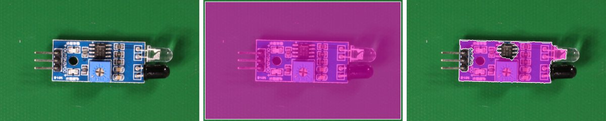
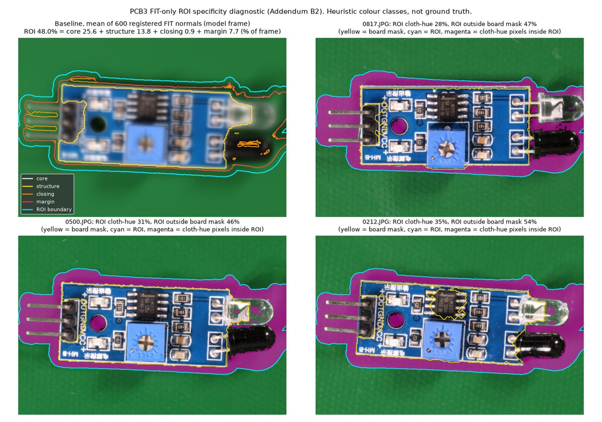
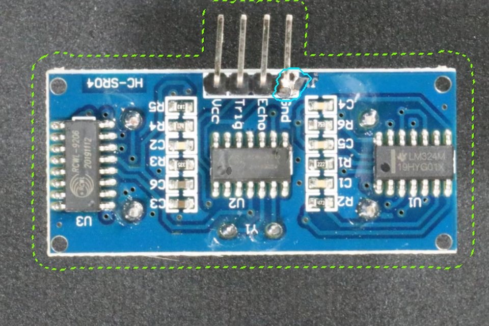

Independent project · Public benchmark images (VisA) · Not factory data
Industrial Visual Inspection: From Prototype to Operational Decision
A prototype that learns only from defect-free circuit-board images and flags new images for a human reviewer. Each change was pre-registered, frozen, and tested once on a board type it had never seen.
RecommendationNo manufacturing pilot recommended yet. Next: one bounded validation step — agree requirements with a quality engineer and collect real line images in shadow mode — before any further model work.
Additional finding · separate board type (PCB3)The v2 baseline achieved 90% recall on a separately evaluated PCB category, but remained sensitive to brighter images (false alarms +15.2 pts). A lighting correction tested there is not adopted: it introduced a blur sensitivity. PCB3 experiment →
One analysis-code repair was made after PCB3 test scoring; it changed no score, threshold or decision. Technical disclosure
At a glance
Inspection problem
Board defects are rare and varied, so there is no large labelled defect library to train on. Question: can a model that has only seen good boards send the right images to a reviewer, without burying the reviewer in false alarms?
What was built
A working prototype: frozen pretrained CNN features, a per-position Gaussian (Mahalanobis) model of normal appearance, board registration, and — in v2 — a score taken over the board region only. Thresholds are set on separate normal images and frozen before any test image is scored.
Remaining risks
Detection: PCB2 recall 80% against a proposed 90%; smallest third of defects 56%.
Lighting: a 10% darker image raised PCB2 false alarms by +25.1 pts; brighter images raised PCB3 false alarms by +15.2 pts.
Portability: on a green background the original board-finding rule marked 96% of the frame as board.
What is not established
No manufacturing user was interviewed, no factory image was used, no pilot was run, and no labour saving or financial return was measured. The project owner's review and an independent audit are pending.
Measured, proposed, not yet validated
Phase A is finished technical feasibility on public data. Phase B is the operational validation a project owner would propose next; none of it has been done with a manufacturing user.
Demonstrated Phase A · completed technical feasibility
Normal-only detector, registration and board-region scoring, implemented and unit-tested.
PCB2 confirmatory run: false alarms 13% → 3%, recall 80% in both versions.
Robustness to synthetic lighting, blur and shift measured at frozen thresholds.
PCB3 pre-registered illumination-correction experiment, run once; the correction is not adopted.
Proposed Phase B · proposed operational validation
Requirements interview and shift observation with a quality engineer.
Shadow mode on real line images, with agreed cost ratio and review capacity.
Site acceptance checks before any decision is influenced by the tool.
A second Go/No-Go on operational evidence.
Not yet validated Beyond what this project can show
Any factory image, camera, lamp, line speed or real defect mix.
Usability of the review interface; reviewer agreement.
Labour saving or financial return.
Robustness to real (not synthetic) lighting changes.
Verified milestones
PCB1 proof of concept: working prototype, frozen split, tests, v1 evaluation
v2 pre-registered before PCB2 data access; thresholds frozen; one confirmatory evaluation
PendingIndependent final audit of code and results
PendingProject owner's technical review
Dates are commit dates in the development repository (Taiwan time). The first commit already contains a working prototype; earlier local work is not separately timestamped, and no total delivery time is claimed. Exact commit times and hashes are kept in the repository's audit history.
Delivery lifecycle: seven decisions
Each stage states the decision taken, the evidence behind it, what it costs, and what should happen next. Status: demonstrated in this project, proposed for a real engagement, or pending evidence that only operations can provide.
1
Preliminary value and Go/No-Go
Demonstrated
Decision
Frame the tool as review support — it never rejects a board — and write proposed targets and No-Go rules before any test.
Evidence
Targets (recall ≥ 90%, false alarms ≤ 10%, AUROC ≥ 0.90, latency ≤ 1 s) unchanged since v1; every run is scored against them by code.
Trade-off
The targets are the developer's proposal, not a user's requirement. They keep the verdict honest; they do not make it right.
Next action
Replace them with targets agreed with a quality owner.
2
Evidence-based understanding of user needs
Proposed
Decision
Do not guess the reviewer's workflow. List the questions only a user can answer: cost of a miss versus a false alarm, review capacity, which defects matter.
Evidence
Requirements document marks every target as proposed; the cost analysis is a break-even range, not a saving.
Trade-off
No manufacturing user was interviewed in this project.
Next action
Interview a quality engineer and observe one inspection shift; record the agreed cost ratio and capacity.
3
First-Time-Right alignment
Proposed
Decision
Show a mock-up built from real model output before building any interface or integration.
Evidence
The workflow mock-up below uses real images, real heat maps and recorded scores — including a false alarm and a missed defect.
Trade-off
A mock-up communicates the idea; it says nothing about usability until someone uses it.
Next action
Walk an inspector through it; turn each field into an acceptance criterion or remove it.
4
Model selection and implementation
Demonstrated
Decision
Frozen pretrained CNN features with a per-position Gaussian (Mahalanobis) model: learns from good boards only, no training loop, explainable heat map.
Evidence
Implemented with unit tests, freeze checks and consistency gates; one change at a time (v2 = board-region scoring).
Trade-off
Weak on small and low-contrast defects; supervised detectors were not tested here.
Next action
Only once Phase B yields real defect labels, compare against a supervised detector on those labels.
5
Controlled validation
Demonstrated
Decision
Pre-register each change, freeze thresholds on separate normal images, evaluate once on a board type not used in development.
Evidence
PCB2: false alarms 13% → 3% with recall unchanged. PCB3 lighting experiment: the pre-registered rule says “improvement supported” (weakly informative), but the correction is not adopted because it made blur false alarms rise by +14.5 pts.
Trade-off
Benchmark images and synthetic perturbations, not a production domain shift. Two deviations are disclosed: PCB3 Addendum B1 committed after fitting, and one analysis-code repair after PCB3 test scoring that changed no score or decision.
Next action
Run the same protocol on site images in shadow mode.
6
Value realization and Go/No-Go
Pending
Decision
No-Go for a pilot; Go for a bounded validation step.
Evidence
Rule-based verdict for PCB2 v2: INCONCLUSIVE (recall below target, at the No-Go floor). Break-even analysis shows when review support beats reviewing everything or nothing.
Trade-off
Without operational data no labour saving or financial return can be claimed.
Next action
Repeat the Go/No-Go with shadow-mode results and the user's own costs.
7
Cross-site readiness, maintenance and handoff
Proposed
Decision
Treat each new board, background, camera or lamp as a new site that must pass its own checks.
Evidence
Versioned configs and thresholds; evaluation refuses a changed model or uncommitted freeze; PCB3 proved that board segmentation does not transfer automatically.
Trade-off
Monitoring, rollback and escalation are documented, not operated.
Next action
Turn the site checklist below into pilot entry gates.
What the data actually showed
Findings from this project, in the order they shaped decisions. Each states the board type, whether it was measured, demonstrated or found after the fact, and what it changes.
PCB1 Demonstrated
Boards arrive in different orientations
116 of 600 training images (19%) were turned half a round; placement and tilt also varied.
So: Registration (centroid, tilt, and a template check for the half-turn) runs before any modelling.
PCB1 Post hoc
False alarms came from the background
All 13/13 false alarms of v1 on PCB1 normals peaked on the cloth (dust, lint), not on the board.
So: v2 takes the score over the board region only. PCB1 could not confirm this, so it was tested on PCB2.
PCB2 Measured
Board-region scoring cut false alarms
On a held-back board type, test false alarms fell from 13% to 3% (−10 pts, CI −17 to −3); AUROC rose from 0.927 to 0.979.
So: The change works for the problem it targeted.
PCB2 Measured
Recall did not improve
80% of defects flagged by both versions, against a proposed 90%; the pre-registered recall hypothesis was not supported. Smallest third of defects: 56% (19/34).
So: Detection sensitivity, not false alarms, is now the binding constraint.
PCB2 Measured
Darkening breaks the operating point
A 10% darker, lower-contrast copy of each image raised v2 false alarms from 3.6% to 28.7%; brightening did not.
So: Lighting must be controlled or corrected — and that must be validated — before a line trial.
PCB3 Demonstrated
Board-finding assumed a grey background
On PCB3's saturated green cloth the original colour rule marked 96% of every frame as board, so registration silently did nothing. A hue band measured on training images restored a board mask of 15%.
So: Background-dependent preprocessing must be re-validated at every site; it failed silently here.
PCB3 Demonstrated
Registration and the board region are only approximately portable
Without correction, a 10% darkening moved the estimated board pose by 10.7 px (median) on training images. The board region covers 48% of the frame; about 31% of its pixels are cloth.
So: Lint close to the board can still trigger a false alarm (see the workflow example); pose estimation depends on brightness.
PCB3 Measured
Illumination correction experiment
The pre-registered rule returned “improvement supported”: under global darkening the candidate's false-alarm rise was −0.4 pts versus +4.3 pts (difference −4.7, CI −8.6 to −0.8). But the baseline barely failed on PCB3, so the endpoint is weakly informative — and the correction made a mild blur raise false alarms by +14.5 pts (baseline +0.4).
So: Not adopted. A correction can trade one sensitivity for another; every fix must be checked against the full set of perturbations, not only the one it targets.

PCB3 training image: as captured · original colour rule (magenta = classed as board, 96% of the frame) · after the hue-band adaptation (15%). Median over 600 training images. VisA image, CC BY 4.0, resized with overlay.
Results by board type — separate datasets
PCB1, PCB2 and PCB3 are different board types, each with its own fitted model, board region and frozen threshold. Rows on different board types are not a matched comparison and do not show progress over time; only rows on the same board type are paired comparisons.
Board type
Version / arm
Evidence
Recall, official test
95% CI
False alarms, test normals
False alarms, holdout normals
AUROC
PCB1
v1 (original pipeline)
Development board type; motivated v2
72% (72/100)
62%–81%
7% (7/100)
3.9% (6/154)
0.938
PCB1
v2, retrospective
Post hoc, on the data that motivated v2 — not independent
88% (88/100)
80%–94%
6% (6/100)
1.9% (3/154)
0.974
PCB2
v1
Confirmatory, held-back board type
80% (80/100)
71%–87%
13% (13/100)
5.3% (8/151)
0.927
PCB2
v2
Confirmatory, held-back board type — the controlled v1/v2 comparison
80% (80/100)
71%–87%
3% (3/100)
4.0% (6/151)
0.979
PCB3
v2 pipeline — baseline arm of the lighting experiment
Confirmatory, new board type; not a new model version
90% (90/100)
82%–95%
3% (3/101)
5.2% (8/155)
0.982
PCB3
v2 + lighting correction — candidate arm
Confirmatory, new board type; not adopted
91% (91/100)
84%–96%
3% (3/101)
3.9% (6/155)
0.983
Each recall is measured on 100 defective benchmark images, so it is uncertain by several points (see the intervals). The PCB3 baseline's 90% is a benchmark measurement on one board type, not an expected recall on a real line.
PCB3: a pre-registered illumination-correction experiment
PCB2 showed that a 10% darker image raised false alarms by +25.1 pts. This experiment tested one candidate fix on a board type never used before, under a protocol committed before the data was opened, evaluated once. In one line: the fix did what it was designed to do, the problem it targets barely appeared on PCB3, and it introduced a new weakness.
Design (fixed before PCB3 was opened)
One change: standardise each image's global brightness and contrast to the training-image median, with one gain for all colour channels, before registration.
Baseline = v2 pipeline; candidate = v2 + correction. Same images, own thresholds, each frozen on 150 separate normal images.
Primary endpoint: difference-in-differences of the false-alarm rise under global darkening (G1) on 101 test + 155 holdout normals; paired bootstrap.
Gates: clean recall and clean false alarms must not get worse beyond fixed margins. Non-uniform lighting (N1) is the out-of-class test.
Known in advance: G1 is a global change, so the correction can undo it almost by construction. A good G1 result is not evidence of robustness to real lighting.
Two decisions, kept separate
A · Pre-registered experimental outcome
ROBUSTNESS IMPROVEMENT SUPPORTED — exactly as computed by the frozen rule, and weakly informative on PCB3. It says only that under a synthetic global darkening the candidate's false-alarm rise was smaller than the baseline's (−0.4 vs +4.3 pts; difference −4.7, CI −8.6 to −0.8). The baseline's own rise was below the protocol's pre-set line for an informative test.
B · Engineering adoption decision
Do not adopt the lighting correction as the preferred pipeline. It cut the brightening false-alarm rise (+15.2 → +2.7 pts) but raised false alarms under a mild blur by +14.5 pts (9/256 → 46/256 normals; baseline +0.4), beyond the original 10-point limit.
Rejecting the candidate does not approve the baseline. The baseline also fails the robustness criterion (brightening +15.2 pts), and neither variant has real end-user validation, a factory pilot or a measured operational return.
Result (single planned run)
Condition
False-alarm rate (false alarms / unseen normals)
Change from clean, pts
Baseline
Candidate
Baseline
Candidate
Clean (P0)no perturbation
4.3% (11/256)
3.5% (9/256)
—
—
Global darkening (G1)primary endpoint
8.6% (22/256)
3.1% (8/256)
+4.3
−0.4
Brightening (B1)secondary; opposite direction
19.5% (50/256)
6.2% (16/256)
+15.2
+2.7
Non-uniform lighting (N1)secondary; out-of-class limitation test
256 unseen normal images (101 official test + 155 supplementary holdout), each variant at its own frozen threshold. Absolute rates and changes are separate columns: a change is the difference of two absolute rates on the same images. Full analysis and an independent recomputation are in the repository.
Original acceptance criteria (unchanged) — both variants
Criterion
Baseline
Candidate
Recall ≥ 90% (official test)
met
· 90% (90/100)
met
· 91% (91/100)
False alarms ≤ 10%, official-test normals
met
· 3% (3/101)
met
· 3% (3/101)
False alarms ≤ 10%, holdout normals
met
· 5.2% (8/155)
met
· 3.9% (6/155)
AUROC ≥ 0.90
met
· 0.982
met
· 0.983
Median latency ≤ 1 s
met
· 187 ms
met
· 292 ms
Robustness: no perturbation raises false alarms by more than 10 pts (G1, B1, blur, shift)
not met
: Brightening (B1) +15.2 pts
not met
: Mild blur +14.5 pts
Verdict
INCONCLUSIVE
INCONCLUSIVE
INCONCLUSIVE means no No-Go rule fired but not every criterion was met; it is not an approval. Recall meets its target at a point estimate on 100 images only.
How to read it
ADid the correction fix global darkening?
Yes, for what it could fix: the candidate's rise under darkening was −0.4 pts against the baseline's +4.3 (difference −4.7 pts, CI −8.6 to −0.8). But the baseline's rise was below the pre-set line for a meaningful test, and a global darkening is exactly what a global correction undoes. This is not evidence of robustness to real lighting.
BDid registration and segmentation become more stable?
Very likely part of the effect. On training images, darkening moved the baseline's estimated board pose by 10.7 px (median) and the candidate's by 0.2 px; board-region fail-safe events 8 versus 0. The experiment cannot separate registration from feature effects, so no split is claimed.
CDid anomaly-score behaviour improve?
Clean behaviour unchanged (AUROC 0.982 → 0.983; recall 90% → 91%). Brightening: rise +15.2 → +2.7 pts. But under a mild blur the candidate's false alarms rose by +14.5 pts (9/256 → 46/256) against +0.4 for the baseline — an unplanned observation; a plausible cause is that blur lowers global contrast, which the correction then stretches.
DWhat remains under non-uniform lighting?
No improvement: difference +0.4 pts (CI −2.7 to +3.9). Both rises were small on PCB3, so the limitation rule was not triggered, but a global correction does not address a lighting gradient — as stated before the test.
EIs it ready for a manufacturing pilot?
No. Against the unchanged criteria both variants are INCONCLUSIVE: clean targets are met on PCB3, but the robustness criterion fails for both (baseline under brightening, candidate under blur). The correction also adds latency (187 → 292 ms median). All perturbations were synthetic. The candidate is not adopted, and the baseline is not production-ready.

Training images only. The board region (48% of the frame) contains the board, pins and LEDs, but about 31% of its pixels are cloth (magenta). Colour classes are heuristic. VisA images, CC BY 4.0, registered, cropped, with overlays.
Disclosed deviation: the protocol required the PCB3 board-mask adaptation (Addendum B1) to be committed before fitting; it was decided before fitting but committed about five minutes after both models were fitted. No calibration or test image had been scored. The diagnostics and this disclosure (Addendum B2) were committed before calibration.
Technical disclosure: analysis-code repair after PCB3 testing
After the PCB3 test and holdout images had been scored once, the pre-registered paired-analysis program refused to run, and one check in it was corrected. The analysis program that produced the PCB3 result is therefore not identical to the frozen one. Nothing here is backdated.
Time
Event
16:58
Freeze committed (eb4e7a9): thresholds, configurations, split and source code
16:58–17:07
Single planned evaluation of both variants. No PCB3 test or holdout image was scored after this.
17:09, 17:10
Paired analysis refused twice, unchanged code: an input check required the label “anomaly”, but VisA records the defect type (bent, melt, scratch, missing).
17:14
Check corrected (7dbd302). Summary test metrics had already been seen on the evaluation console.
17:15
Paired analysis completed and committed (9c9f7c5).
What changed
One condition in the function that reads ground-truth masks for the descriptive small/low-contrast defect table. That table could not be produced before the repair; its arithmetic did not change.
What did not change
Model fitting, preprocessing, thresholds, test scores, predictions, the primary statistic and the decision rule. No image was re-scored and the test was not repeated.
Independent check
A separate script that imports none of the project code recomputed every PCB3 number from the raw score files and the original masks: 90 of 90 checks agree with the recorded outputs.
Full incident record — chronology, exact patch, file hashes, deviations — in the repository at docs/pcb3_post_evaluation_repair.md; every post-test event in docs/illumination_experiment_deviations.md; the recomputation in reports/pcb3_verification/recompute.md. Times are 2026-10-09, Taiwan time.
Why a frozen CNN + Mahalanobis model
The need was a normal-only baseline that can be fitted from defect-free images in minutes, explained to an engineer, and frozen. The comparison is qualitative: YOLO-style detection and fine-tuning were not trained or tested in this project.
Approach
Labels needed
Output
Fits when
Main risk
Frozen CNN features + per-position Gaussian (chosen)
Defect-free images only
Anomaly score and heat map
Defects are rare and not known in advance; a reviewer stays in the loop
Misses subtle defects whose features look normal; sensitive to pose and lighting
Object detector (e.g. YOLO family)
Boxes for every defect type, many examples of each
Located and classified defects
Defect types are known, stable and plentiful, and a defect class is needed
Cannot flag a defect type it never saw; labelling cost and upkeep
Fine-tuned classifier or backbone
Labelled good and bad images
Image-level class or score
Enough labelled defects exist and the process is stable
Overfits small defect sets; needs a training, validation and retraining process
Golden-image or rule-based comparison
None, but tuning per product
Differences from a reference
Fixture, lighting and product are tightly controlled
Breaks under pose, lighting and normal part-to-part variation
Choosing the normal-only model is a statement about this stage — no defect labels, a reviewer in the loop — not a claim that it beats supervised models. Phase B data would allow a fair comparison.
Two meanings of “ROI”
The same abbreviation means two different things in this project, and they are kept apart.
Image ROI — region of interest
The part of the image where the score is taken. v2 uses the maximum anomaly over a board region built from defect-free training images plus a 16-pixel margin. If less than 0.95 of an image's own board mask lies inside the region, the system does not trust it and scores the whole frame instead, which can only make a review more likely.
Business ROI — return on investment
Not measured. What the data supports is a simplified classification-cost sensitivity. Let k = defect odds × (cost of a missed defect ÷ cost of one review). With PCB2 v2's measured miss rate 0.20 and false-alarm rate 0.03, the cheapest policy is:
Policy
Cheapest when
Review nothing
k below 0.0375
Review only images flagged by v2
k between 0.0375 and 4.85
Review everything
k above 4.85
This compares classification error costs only. It ignores review time, line speed, downstream escapes, staffing and implementation cost, and k must come from the user's own prevalence and costs. It is not a financial ROI, and no labour saving is claimed.
Human review workflow — mock-up Proposed
How the output could reach a reviewer: one card per image, with the heat map, the score against the frozen threshold, and a check that the board was located. Images, heat maps and numbers are real PCB2 v2 test outputs.
Proposed decision-support interface — not a deployed application. The tool recommends a review; a person decides.
006.JPGREVIEW
Anomaly score
88.6
Frozen threshold (P95)
51.2
Board located (ROI coverage)
1.00
Benchmark label
defective
Defect caught
The heat map concentrates on the bent header pins; the score is well above the threshold.
Reviewer action: Inspect the pins and record the defect type.
0484.JPGREVIEW
Anomaly score
65.1
Frozen threshold (P95)
51.2
Board located (ROI coverage)
1.00
Benchmark label
normal
False alarm
A normal board. The highest anomaly sits on a mark on the cloth just inside the board region's margin — the specificity limit found in the diagnostics.
Reviewer action: Confirm no defect; tag the cause as background so false alarms can be tracked.
072.JPGNO REVIEW

Anomaly score
31.4
Frozen threshold (P95)
51.2
Board located (ROI coverage)
1.00
Benchmark label
defective
Known limitation: defect missed
A small defect at a header pin scores below the threshold, so no review is suggested. The cyan outline is the benchmark's ground truth, shown here only to explain the miss.
Reviewer action: None prompted. Small defects need a different safeguard, such as sampling audits.
Dashed green: scoring region. Heat map: smoothed anomaly score where it exceeds the median of calibration normals. Scores are the recorded official-test values; the threshold is the one frozen before testing. VisA images (CC BY 4.0), registered, cropped and resized, with overlays.
Cross-site readiness: what a new site must prove
PCB1, PCB2 and PCB3 are board types from a public dataset, not manufacturing sites. They still show, concretely, which assumptions break when anything changes.
Risk
What this project observed
What a new site must provide or pass
Background-dependent board segmentation
Grey cloth worked; PCB3's green cloth made the original rule mark 96% of the frame as board, with no error raised.
Segmentation check on the site's own normal images: board-mask area within an expected range, visual sign-off of a contact sheet.
Lighting sensitivity
PCB2 false alarms rose by +25.1 pts under a 10% darkening; on PCB3, brightness changes also moved the estimated board pose.
Lighting specification and a brightness/contrast check on every image; a perturbation test at the site's frozen threshold.
Orientation and placement
19% of PCB1 boards were turned half a round; placement varied on every board type.
Fixture or registration acceptance: pose spread on site normals, no wrong-orientation decisions on a labelled sample.
ROI compatibility
The board region covered 48% of the PCB3 frame with about 31% cloth inside; false alarms can start on cloth near the board.
Region built from the site's own normals, coverage gate passing, fail-safe rate on calibration images below the agreed limit.
Small and low-contrast defects
Smallest third of PCB2 defects: 56% recall.
A labelled sample of the site's real defect mix; recall per size class reported, not just overall.
Site-specific data and calibration
Every board type needed its own fitted model, board region and threshold.
Enough normal images for fit and a separate set for calibration; a held-out set the team never looks at during tuning.
Threshold and model versioning
Evaluation refuses to run if the model, config or split changed after the freeze, or if the freeze is not committed.
Versioned model + threshold + config released together; any change triggers recalibration and a regression run.
Operations and engineering handoff
What an engineer taking this over must know. Documented in the repository's handoff guide; none of it has been operated on a line.
Input specification
One RGB image of one board, fixed overhead camera, the same board type and background as the fitted model. Other inputs are out of scope.
Registration failures
No board found raises an error, never a silent pass. Such images go to human review and are counted.
ROI fallbacks
If the board mask is not inside the board region, the whole-frame score is used (more conservative). Fallback rate is a monitored quantity; calibration stops if it exceeds its limit.
Lighting alerts
Proposed: compare each image's global brightness and contrast with the training range and flag outliers for review, because measured false alarms rise sharply under darkening.
Test and threshold versioning
Model, threshold, config and split are hashed at freeze; evaluation refuses mismatches. Every release carries its freeze record.
Monitoring
Track review rate, fallback rate, brightness drift and reviewer-confirmed false alarms per shift; a shift in any of them triggers investigation.
Regression tests
Unit and synthetic end-to-end tests, plus consistency checks that every reported number traces to a recorded output. Re-run on every change.
Rollback
Keep the previous model and threshold set deployable; roll back on a review-rate or fallback-rate alarm, then recalibrate offline.
Human escalation
The tool only recommends; a reviewer decides. Unclear cases and any suspected systematic miss go to the quality owner, never to automatic disposition.
Terms used on this page
Recall
Share of defective boards the tool sends to human review.
False-alarm rate
Share of normal boards the tool sends to review. The tool only recommends a review, so a false alarm costs reviewer time, not product.
AUROC
Threshold-free ranking quality: the probability that a random defective board scores higher than a random normal one.
Frozen threshold (P95)
The score above which an image is flagged, set from separate normal images to target about 5% false alarms, and fixed before any test image is scored.
Pre-registration
Writing the hypothesis, data split, endpoint and decision rule into the repository before the test data is opened.
Difference-in-differences
How much less (or more) the candidate's false alarms rise under a perturbation than the baseline's, on the same images.
Shadow mode
Running the tool alongside existing inspection without affecting any decision, to measure it on real production images.